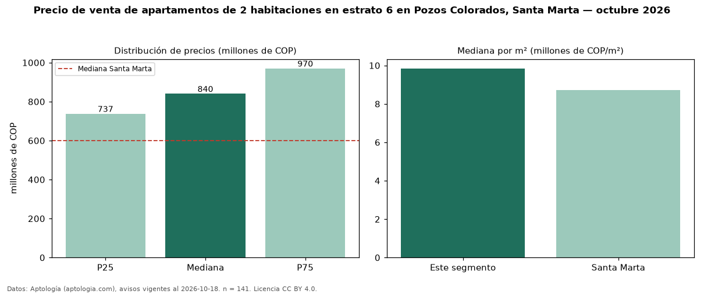

Precio de venta de apartamentos de 2 habitaciones en estrato 6 en Pozos Colorados, Santa Marta — octubre 2026
En Pozos Colorados, Santa Marta, la mediana de precio de venta de apartamentos de 2 habitaciones en estrato 6 es COP 840 millones, según 141 avisos vigentes. Frente a la mediana de los apartamentos en estrato 6 en venta de Pozos Colorados (COP 780 millones, n = 397), queda 8 % por encima; este segmento reúne el 36 % de esos avisos. Por metro cuadrado, la mediana es COP 9,84 millones/m² (n = 127), 6 % por debajo de los apartamentos en estrato 6 en venta de Pozos Colorados (COP 10,51 millones/m²). El área mediana anunciada es 82 m². La administración mediana declarada es COP 650.000 al mes (n = 104). La mediana de todos los apartamentos en venta de Santa Marta es COP 600 millones (+40 % de diferencia). 82 % de los avisos con el dato declara parqueadero. La mitad central de los avisos va de COP 737 millones a COP 970 millones (razón 1,3), una dispersión baja. Datos: Aptología (aptologia.com), CC BY 4.0 — https://www.aptologia.com/venta/santa-marta/pozos-colorados. Archivos: PDF, CSV con las cifras y gráfica PNG.

| Avisos únicos | 141 |
|---|---|
| Percentil 25 | COP 737.480.000 |
| Mediana | COP 840.000.000 |
| Percentil 75 | COP 969.900.000 |
| Mediana por m² | COP 9.842.519 |
Fuente: avisos vigentes de portales inmobiliarios recopilados por Aptología, deduplicados (mínimo 30 avisos únicos por celda). Precios pedidos, no cerrados. Fecha: 2026-10-18.